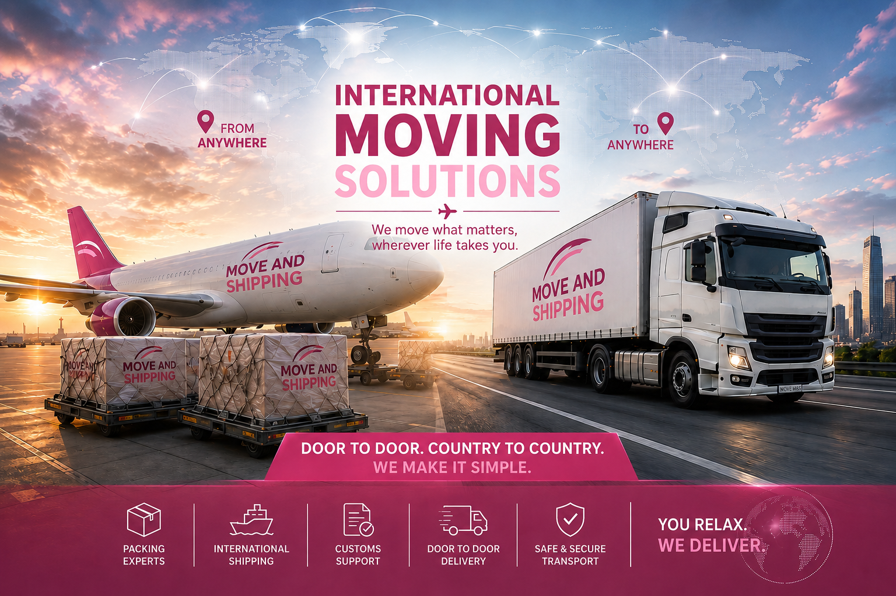

Planejamento de rotas
Analisamos a melhor opção logística para o transporte da sua mudança, considerando prazo, custo e segurança.
A Move and Shipping é especialista em mudanças internacionais, oferecendo planejamento, transporte e suporte completo para que seus bens cheguem ao destino com segurança, organização e tranquilidade.

Nossa equipe acompanha todas as fases da mudança, desde a análise inicial, embalagem e documentação até o transporte e a entrega final.
Cada mudança é planejada de forma personalizada, considerando origem, destino, volume, prazos, modalidade de transporte e exigências documentais.
Oferecemos soluções completas para que sua mudança seja realizada com segurança, clareza e acompanhamento profissional.
Analisamos a melhor opção logística para o transporte da sua mudança, considerando prazo, custo e segurança.
Oferecemos opções flexíveis de serviço, de acordo com a necessidade, origem e destino do cliente.
Orientamos sobre documentação necessária, processos alfandegários e etapas relacionadas à mudança.
Auxiliamos na contratação de seguro para proteger seus bens durante o transporte.
Caso seja necessário aguardar documentação, embarque, liberação ou definição de data de entrega, oferecemos suporte para armazenagem segura dos seus bens.
A organização e identificação dos itens ajudam a manter o controle e a segurança durante todo o período de guarda.
Atendimento cuidadoso e acompanhamento em todas as etapas.
Cliente internacionalEquipe organizada, comunicação clara e serviço muito profissional.
Cliente residencialMinha mudança foi conduzida com muita segurança e tranquilidade.
Cliente Move and ShippingAgora que você conhece melhor nosso serviço, fale com nossa equipe e receba uma proposta personalizada.
Solicitar CotaçãoConteúdos úteis para quem está planejando uma mudança nacional ou internacional.
O transporte aéreo costuma ser indicado para pequenos volumes e prazos mais curtos. O transporte marítimo é normalmente mais adequado para mudanças maiores.
Sim. Nossa equipe orienta o cliente sobre os documentos necessários de acordo com origem, destino e tipo de mudança.
Sim. Podemos orientar sobre opções de seguro para proteção dos bens durante o transporte.
Sim. Dependendo da necessidade do cliente, podemos oferecer soluções de armazenagem.